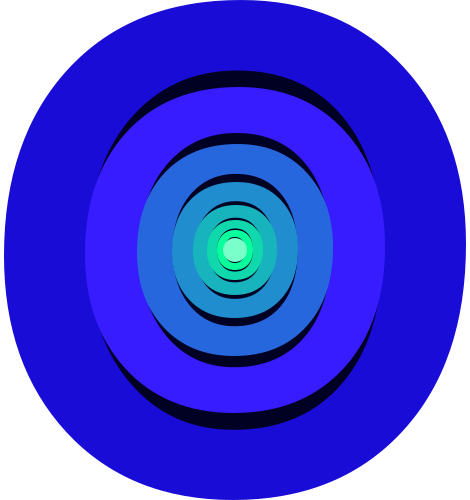

<footer class="footer">
  <p class="footer__moto">#visitsedona</p>
  <ul class="social-list footer__social-list">
    <li class="social-list__item">
      <a class="social-list__link" href="#" aria-label="twitter">
        <svg class="social-list__icon" width="17" height="15">
          <use xlink:href="../img/svgSprite/sprite.svg#twitter-icon"></use>
        </svg>
      </a>
    </li>
    <li class="social-list__item">
      <a class="social-list__link" href="#" aria-label="facebook">
        <svg class="social-list__icon" width="9" height="19">
          <use xlink:href="../img/svgSprite/sprite.svg#fb-icon"></use>
        </svg>
      </a>
    </li>
    <li class="social-list__item">
      <a class="social-list__link" href="#" aria-label="youtube">
        <svg class="social-list__icon" width="20" height="14">
          <use xlink:href="../img/svgSprite/sprite.svg#yt-icon"></use>
        </svg>
      </a>
    </li>
  </ul>
  <a
    class="copyright-link footer__copyright-link"
    href="https://github.com/AlexOdnov"
    >Разработано
    <picture>
       </picture
  ></a>
</footer>
